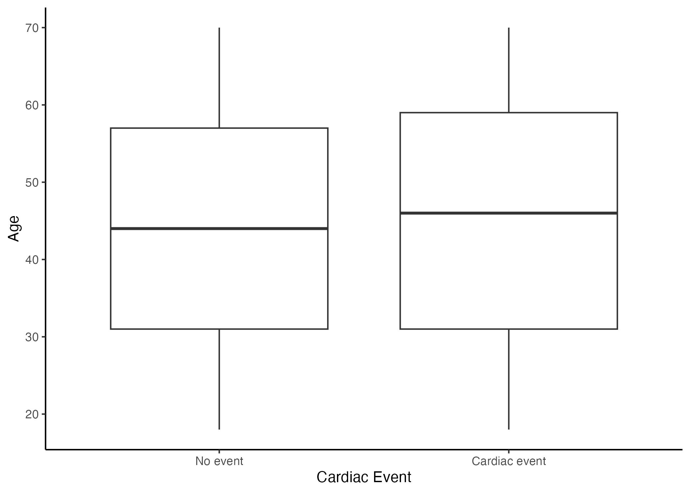
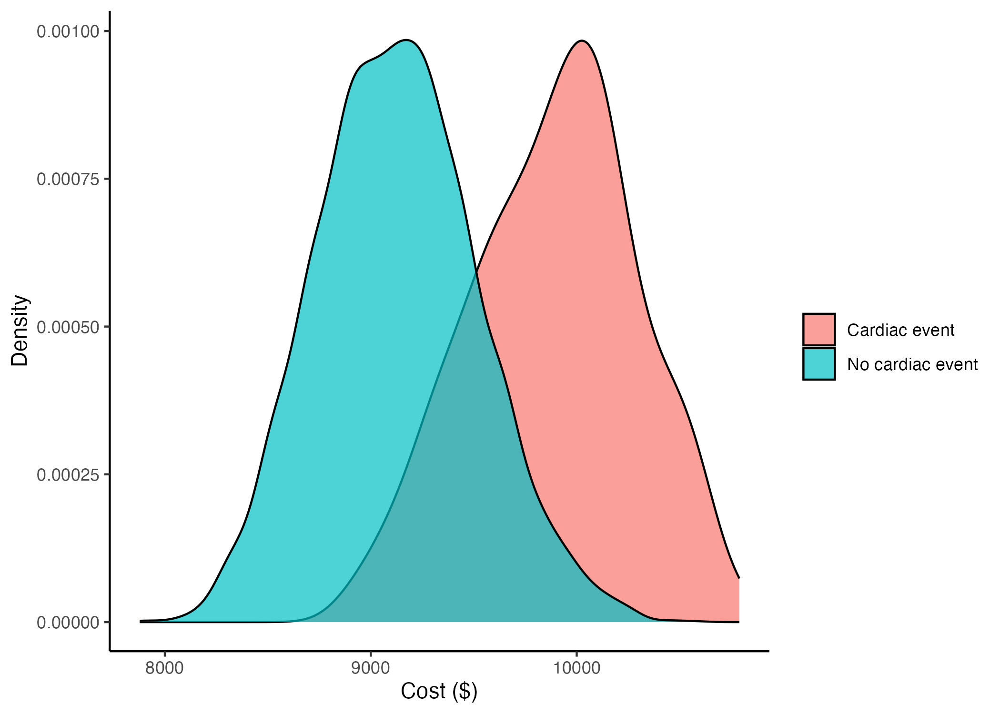

Simulated data can be used to conduct reproducible research in cases where sensitive population health data are unavailable or restricted (Shepherd et al. 2017). The goal of this report is to use a simulated dataset to answer a population health research question while generating a reproducible analysis and report. This analysis has two aims: (1) Evaluate the association between smoking and any cardiac event, (2) Evaluate effect modification by cost for the relationship between smoking and any cardiac event.
Cardiac disease is the leading cause of death for both men and women, and people of most racial groups in the US [“Multiple Cause of Death Data on CDCWONDER” (n.d.); (Flora and Nayak 2019). The economic burden associated with cardiac disease in the US was estimated to be $252 billion between 2019 and 2020 (CDC 2025). Smoking is a well-established risk factor for cardiac disease (Martin et al. 2024; D’Alessandro et al. 2012). Additionally, the cost of medical treatment may potentially modify the association between smoking and cardiac events, either by affecting access to care or through other socioeconomic mechanisms.
Methods
Description of the dataset
We used a simulated a cross-sectional dataset of 5000 observations. Our primary outcome is the presence of absence of any cardiac event in the past five years. Our exposure is being a smoker versus not being a smoker during this period. Our dataset included the covariates sex, age and cost of any medical treatment incurred during the study period. The variable sex was coded as a binary variable (reference group is males) while age (years) and cost ($) where continuous. The code and data used to generate this report can be found at https://github.com/suhihanif/Assignment-4.
Primary analysis
For our first aim, we fit a generalized linear model with a binomial family to evaluate the association between smoking and experiencing a cardiac event, adjusting for sex and age. Below is our regression model for aim 1:
The intercept \(\beta_0\) represents the log odds of experiencing a cardiac event in male non-smokers with age 0 years
The coefficient \(\beta_1\,\text{smoking}\) represents the change in the log odds of experiencing a cardiac events for participants who ever smoked during the study period compared to participants who did not, holding age and sex constant
The coefficient \(\beta_2\,\text{sex}\) represents the change in the log odds of experiencing a cardiac events for female participants compared to male participants, holding smoking status and age constant
The coefficient \(\beta_3\,\text{age}\) represents the change in the log odds of experiencing a cardiac events for each additional year of age, holding smoking status and sex constant
Secondary analysis
For our second aim, we were interested to see if the cost of medical treatments during the study period modified the relationship between smoking and having a cardiac event. Below is our regression model for aim2:
The intercept \(\beta_0\) represents the log odds of experiencing a cardiac event in male non-smokers with age 0 years and cost of medical treatment $0.
The coefficient \(\beta_1\,\text{smoking}\) represents the change in the log odds of experiencing a cardiac events for participants who ever smoked during the study period compared to participants who did not, holding age, sex and cost constant
The coefficient \(\beta_2\,\text{sex}\) represents the change in the log odds of experiencing a cardiac events for female participants compared to male participants, holding smoking status, age and cost constant
The coefficient \(\beta_3\,\text{age}\) represents the change in the log odds of experiencing a cardiac events for each additional year of age, holding smoking status, sex and cost constant
The coefficient \(\beta_4\,\text{cost}\) represents the change in the log odds of experiencing a cardiac events for each additional dollar spent on medical treatment, holding smoking status, sex and age constant
The coefficient \(\beta_5\,\text{smoking}*{cost}\) represents the additional change in the log odds of experiencing a cardiac events for each additional dollar spent on treatment for participants who ever smoked compared to participants who did not, holding sex and age constant
Results
Table 1: Characteristics of study participants
No Cardiac Event
Cardiac Event
Variable
Mean/% (control)
N (control)
Mean/%
N
Smoker
13.8%
4750
53.2%
250
Is female
57.8%
4750
11.6%
250
Age (years)
43.9
4750
45.5
250
Cost of treatment ($)
9127.5
4750
9892.3
250
Table 1 shows the characteristics of study participants. Out of 5000 participants, 250 experienced a cardiac event. Among participants with no cardiac events, 13.8%% were smokers and 57.8%% were female. Among participants who experienced cardiac events, 53.2%% were smokers and 11.6%% were female. Participants who experienced cardiac events were on average older (mean age 45.5 years) and had spent more on medical treatment (mean cost $9892.3).
The median age for participants who had a cardiac event was slightly higher (46 years) than the median age (44 years) for participants who did not have a cardiac event (Figure 1). The simulated dataset did not contain any outliers for age.
Figure1: Box plot of participants’ age grouped by cardiac event status

Figure1: Box plot of participants’ age grouped by cardiac event status
On average, partcipants who experienced cardiac events had higher treatment costs (range: $8902 to $10790) compared to participants who did not experience cardiac events (range: $7878 to $10573) with overlap in the distribution of costs between the two groups. Figure 2 shows the distribution of treatment costs by cardiac event status.
Figure2: Density plot of cost of treatment by cardiac event status

Table 2: Adjusted associations between smoking status, sex, age and cardiac events
Odds Ratio
Lower
Upper
P value
Intercept
0.04
0.03
0.07
0.000
Smoker
8.26
6.27
10.89
0.000
Is female
0.08
0.06
0.13
0.000
Age (years)
1.01
1.00
1.02
0.084
Results from the primary analysis are presented in Table 2. Being a smoker was associated with higher odds of experiencing a cardiac event compared to being a non-smoker (OR 8.26, 95% CI: 6.27–10.89, p = 0.000). Being female was associated with lower odds of cardiac events compared to being male (OR 0.08, 95% CI: 0.06–0.13, p = 0.000). Age was not significantly associated with experiencing a cardiac event (OR: 1.01, 95% CI: 1.00–1.02, p = 0.084).
Table 3: Effect modification by cost of treatment
Odds Ratio
Lower
Upper
P value
Intercept
0.00
0.00
0.00
0.000
Smoker
1.13
0.68
1.87
0.633
Is female
0.86
0.85
0.88
0.000
Age (years)
1.01
1.01
1.01
0.000
Cost of treatment ($)
0.00
0.00
0.46
0.038
Smoker × Cost interaction
1.00
1.00
1.00
0.112
The interaction between smoking and cost of treatment was not statistically significant (OR 1.00, 95% CI: 1.00–1.00, p = 0.112). Therefore, there is no evidence that the adjusted association between cardiac events and smoking status is modified by the cost of treatment.
Discussion
In our primary analysis, we found that cardiac events were significantly associated with smoking. In our secondary analysis, we found no evidence of effect modification of the relationship between smoking and cardiac events by cost of treatment. Our results for our primary analysis are similar to other studies done in the US that found smoking to be associated with an increased risk of cardiac events (D’Alessandro et al. 2012; Martin et al. 2024). A possible mechanism by which smoking affects cardiac events is that compounds in cigarette smoke lead to oxidative stress, which causes fibrosis in cardiac tissue (D’Alessandro et al. 2012). Similarly, in another study of cardiac hospitalizations in the US between 2012 and 2018, smoking was significantly associated with joint opioid use and cardiac events (Martin et al. 2024).
A limitation of this study is that the cohort dataset included very few covariates. As a result, the analyses may have been confounded by omitted variable bias. The cohort data is also simulated, and may not have the properties or real-world distributions of covariates that would be found in actual patient data. Future analyses could be carried out with a synthetic dataset that contains information on all potential confounders of the relationship between smoking and cardiac events, such as race, socioeconomic status, exercise levels, and other relevant variables.
In conclusion, smoking was significantly associated with cardiac events in this analysis but there was no effect modification by cost of treatment using a simulated dataset.
D’Alessandro, Alessandra, Irina Boeckelmann, Matthias Hammwhöner, and Andreas Goette. 2012. “Nicotine, Cigarette Smoking and Cardiac Arrhythmia: An Overview.”Eur. J. Prev. Cardiol. 19 (3): 297–305.
Flora, Gagan D, and Manasa K Nayak. 2019. “A Brief Review of Cardiovascular Diseases, Associated Risk Factors and Current Treatment Regimes.”Curr. Pharm. Des. 25 (38): 4063–84.
Martin, Seth S, Aaron W Aday, Zaid I Almarzooq, Cheryl A M Anderson, Pankaj Arora, Christy L Avery, Carissa M Baker-Smith, et al. 2024. “2024 Heart Disease and Stroke Statistics: A Report of US and Global Data from the American Heart Association.”Circulation 149 (8): e347–913.
Shepherd, Bryan E, Meridith Blevins Peratikos, Peter F Rebeiro, Stephany N Duda, and Catherine C McGowan. 2017. “A Pragmatic Approach for Reproducible Research with Sensitive Data.”Am. J. Epidemiol. 186 (4): 387–92.